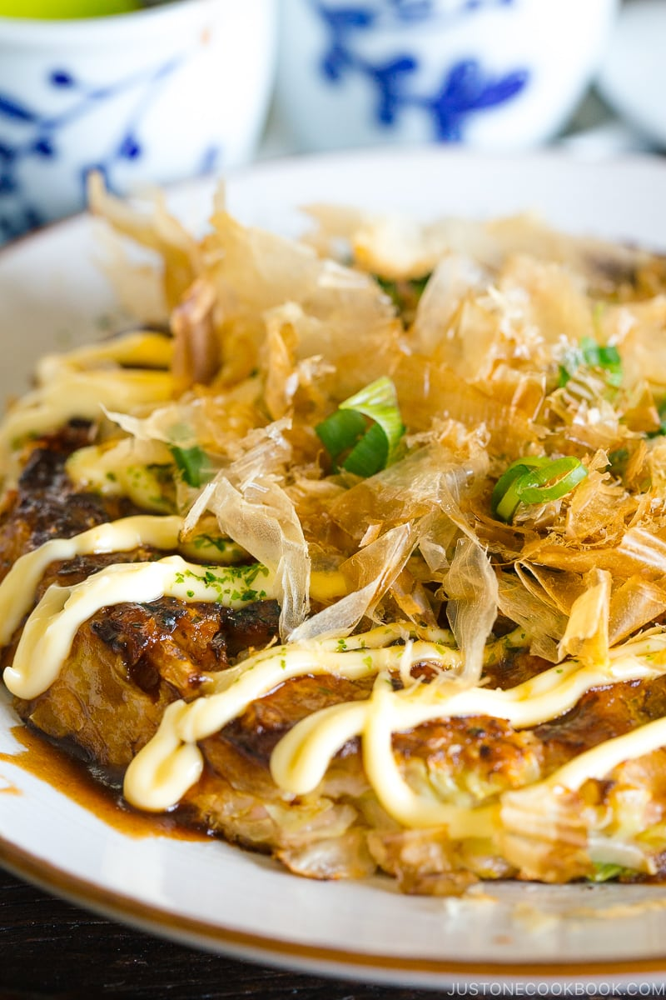

Okonomiyaki

Japanese Savoury Cabbage Pancake
A popular street food from Osaka, Okonomiyaki is a delicious Japanese savory pancake “grilled as you like it“ with your choice of protein and tasty condiments and toppings. My recipe includes the 6 key ingredients that give your Okonomiyaki a truly authentic taste.
Total Time: Less than 30 mins
Ingredients
- Cooked/prepared protein (meat or fish)
- Cabbage (shredded finely)
- All purpose flour
- Kewpie Mayonnaise
- Okonomiyaki sauce
- Bonito flakes
- Dried seaweed flakes
- Eggs
- Chopped spring onion
- Dashi
Directions
- Mix together the eggs and dashi stock
- Add the flour and mix until smooth
- Add the shredded cabbage, half of the chopped spring onion and your choice of protein and mix until all ingredients are evenly coated
- Scoop out the mixture onto a large frying pan over medium heat. We like aiming for a circle shape about 10 cm / 4 inches wide. Cook each pancake for a few mins per side, until lightly browned on both sides.
- Transfer your freshly cooked pancakes to serving plates, then top with drizzles of kewpie mayonnaise and okonomiyaki sauce. For even better tasting okonomiyaki, top with sprinklings of dried seaweed flakes, bonito flakes and a few slices of green onion to taste.